Belgrade Arbor
Captures desktop
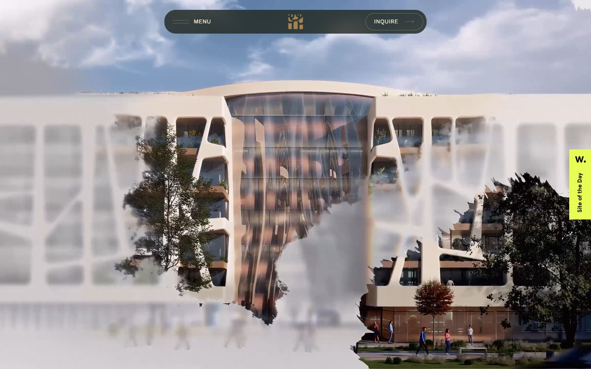

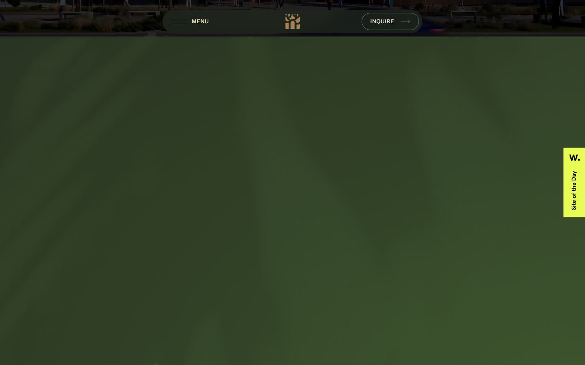
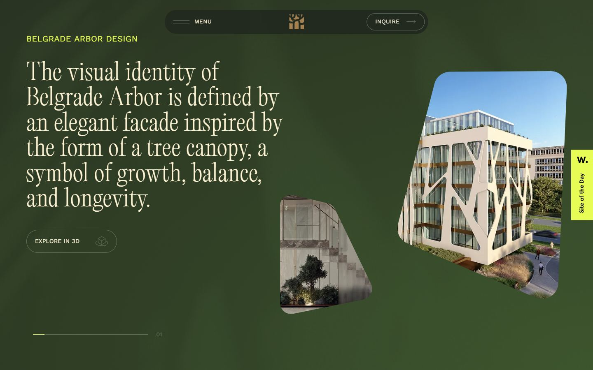
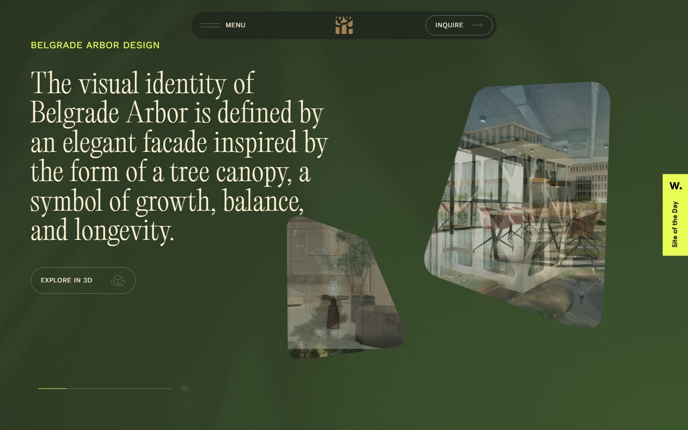
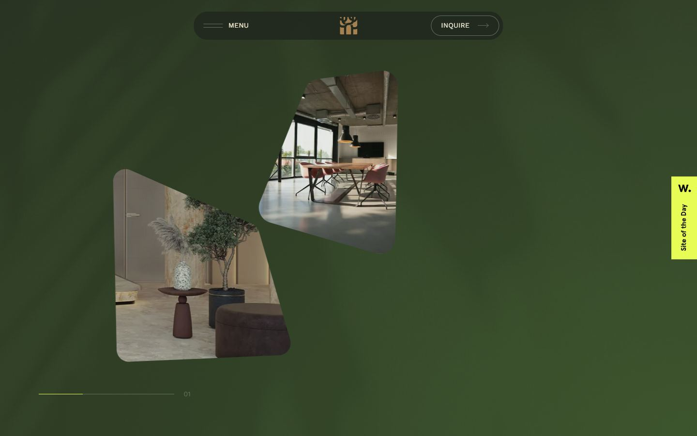
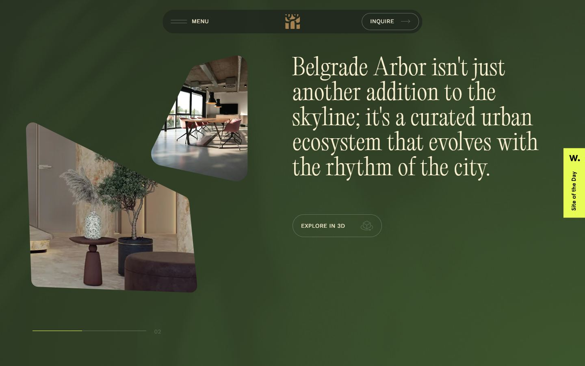
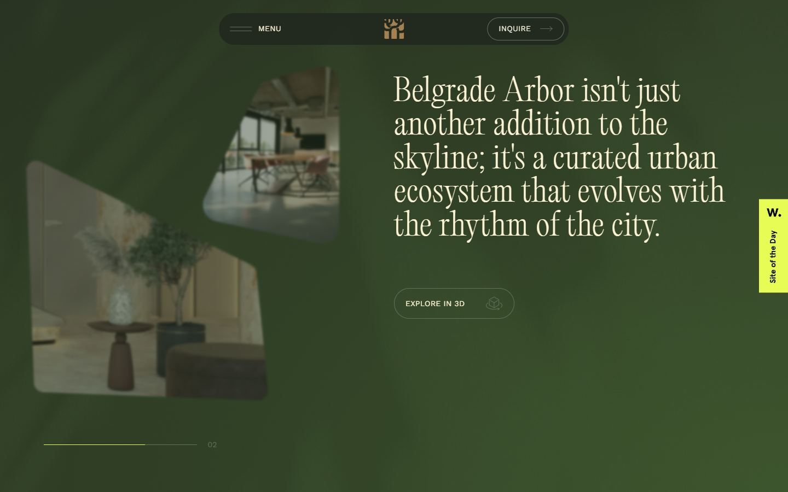
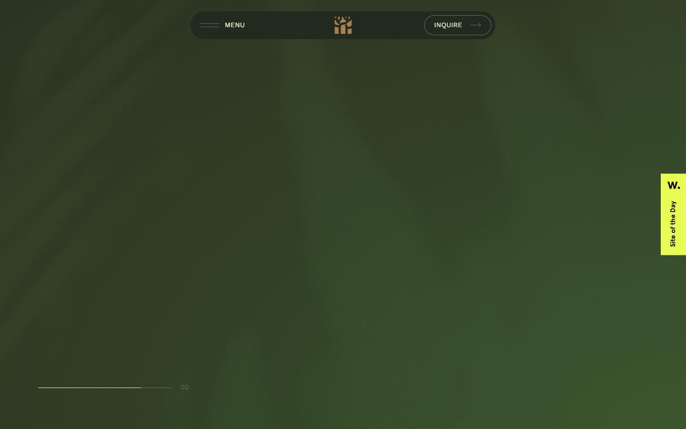
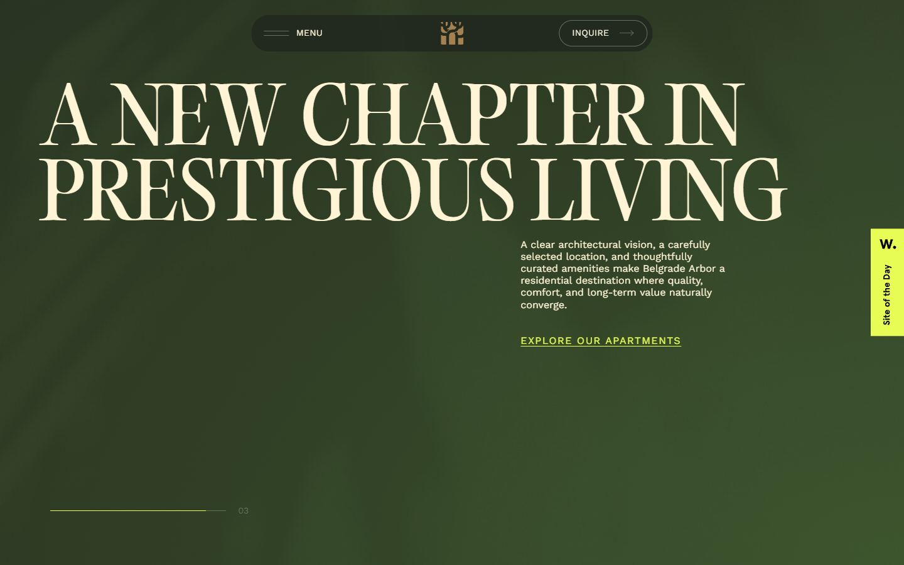
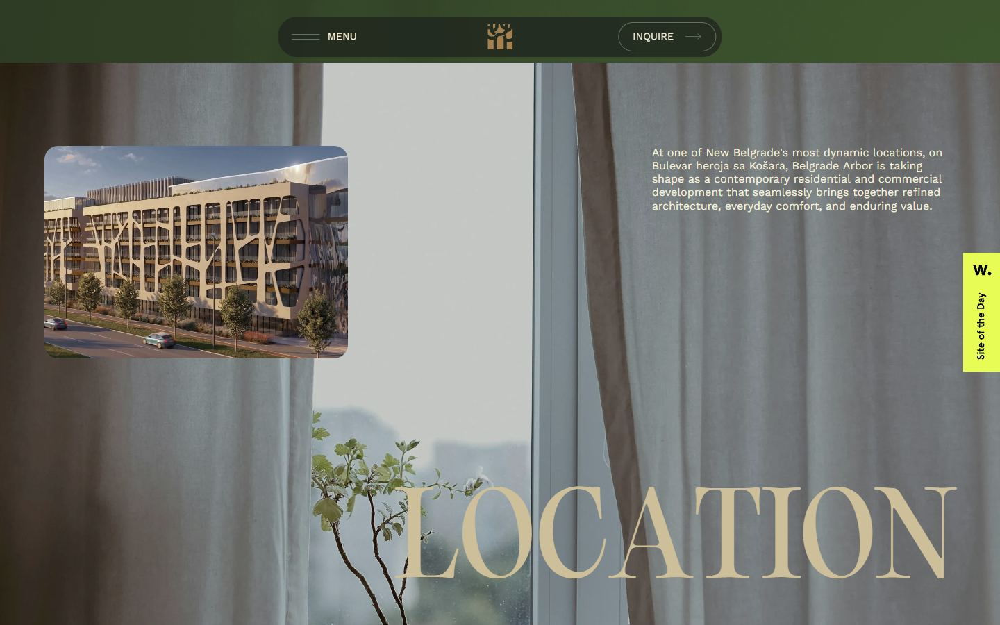
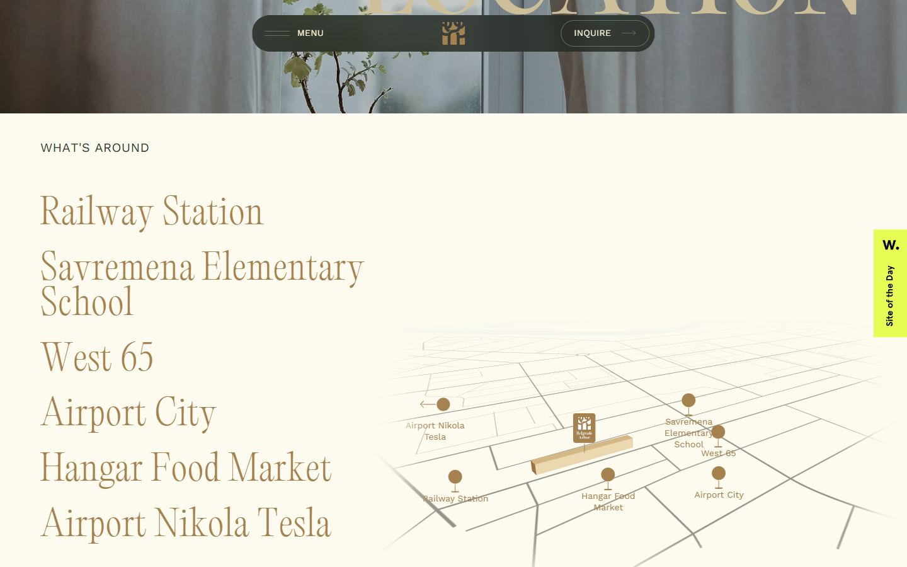
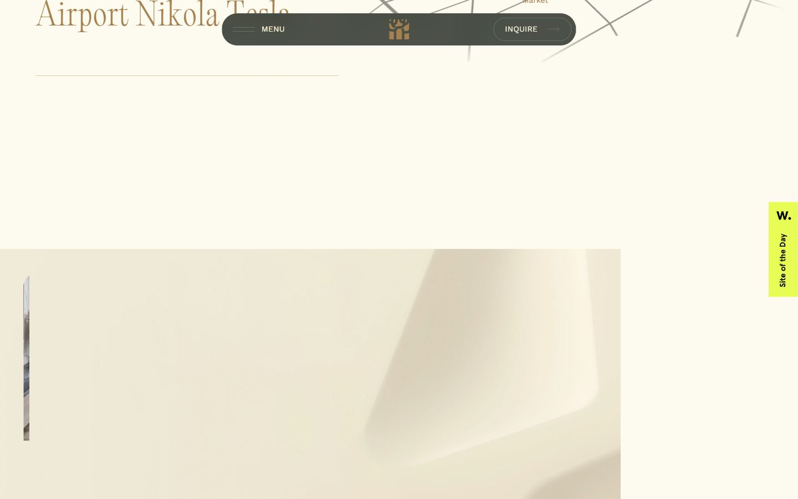
Pages internes

Mobile
Stack détectée
Barba.js, DrawSVG/MorphSVG, GSAP, Keen slider, Lenis, Next.js, React, React Three Fiber, ScrollTrigger, SplitText/SplitType, Three.js, Virtual scroll, WebGL
Versions : GSAP 3.11.0 · Three.js r?
Shaders GLSL personnalisés extraits : 10 (voir shaders.glsl)
Design tokens
Couleurs (fonds, pondérées par surface)
#314759 · #fdfbef · #ccbf99 · #60735c
Couleurs de texte
#2e3a26 · #fff4d6 · #a68150 · #ccbf99 · #f4f0db · #e7fd55 · #3c3c3c · #60735c
Polices utilisées (par volume de texte)
Work Sans · editorialOld · ui-sans-serif
Fichiers de police chargés
Typographie
| Élément | Police | Taille | Graisse | Interligne | Interlettrage | Casse |
|---|---|---|---|---|---|---|
| h1 | editorialOld, "editorialOld Fallback" | 151.2px | 400 | 151.2px | normal | uppercase |
| h2 | editorialOld, "editorialOld Fallback" | 55.944px | 300 | 61.5384px | 1.11888px | none |
| p | "Work Sans", "Work Sans Fallback" | 19.98px | 400 | 29.97px | 0.3996px | uppercase |
| a | ui-sans-serif, system-ui, sans-serif, "Apple Color | 15.984px | 400 | 23.976px | normal | none |
| button | "Work Sans", "Work Sans Fallback" | 13.986px | 400 | 20.979px | 0.27972px | uppercase |
| li | ui-sans-serif, system-ui, sans-serif, "Apple Color | 15.984px | 400 | 23.976px | normal | none |
| body | ui-sans-serif, system-ui, sans-serif, "Apple Color | 15.984px | 400 | 23.976px | normal | none |
Échelle des tailles de texte
15.984px (414) · 55.944px (381) · 17.982px (166) · 19.98px (100) · 51.948px (91) · 13.986px (88) · 159.84px (70) · 35.964px (49) · 99.9px (48) · 119.88px (43) · 39.96px (19) · 31.968px (18) · 151.2px (13) · 239.76px (9) · 95.904px (9) · 127.872px (9)
Arrondis
3.35544e+07px · 19.98px · 27.972px
Transitions CSS fréquentes
Points de rupture (media queries)
601px · 1121px · 481px · 1441px · 1601px · 1921px · 2560px · 1920px · 1440px · 1120px · 850px · 600px
Animations CSS (@keyframes)
spin, enter, exit
Variables CSS (:root)
--font-sans: var(--font-workSans); --font-mono: ui-monospace, SFMono-Regular, Menlo, Monaco, Consolas, "Liberation Mono", "Courier New", monospace; --color-red-500: lab(55.4814% 75.0732 48.8528); --color-black: #000; --spacing: .25rem; --container-lg: 32rem; --container-xl: 36rem; --text-xs: .75rem; --text-xs--line-height: calc(1 / .75); --text-sm: .875rem; --text-sm--line-height: calc(1.25 / .875); --text-base: 1rem; --text-base--line-height: calc(1.5 / 1); --font-weight-light: 300; --font-weight-normal: 400; --font-weight-medium: 500; --font-weight-bold: 700; --tracking-widest: .1em; --leading-tight: 1.25; --leading-snug: 1.375; --ease-in-out: cubic-bezier(.4, 0, .2, 1); --blur-lg: 16px; --aspect-video: 16 / 9; --default-transition-timing-function: cubic-bezier(.4, 0, .2, 1); --default-font-family: var(--font-workSans); --default-mono-font-family: var(--font-mono); --color-vanilla: #fdfbef; --color-pine-green: #2e3a26; --radius: .625rem; --background: var(--color-vanilla); --foreground: var(--color-pine-green); --card: lab(100% 0 0); --card-foreground: lab(2.75381% 0 0); --popover: lab(100% 0 0); --popover-foreground: lab(2.75381% 0 0); --primary: lab(7.78201% -.0000149012 0); --primary-foreground: lab(98.26% 0 0); --secondary: lab(96.52% -.0000298023 .0000119209); --secondary-foreground: lab(7.78201% -.0000149012 0); --muted: lab(96.52% -.0000298023 .0000119209); --muted-foreground: lab(48.496% 0 0); --accent: lab(96.52% -.0000298023 .0000119209); --accent-foreground: lab(7.78201% -.0000149012 0); --destructive: lab(48.4493% 77.4328 61.5452); --border: lab(90.952% 0 -.0000119209); --input: lab(90.952% 0 -.0000119209); --ring: lab(66.128% -.0000298023 .0000119209); --chart-1: lab(57.1026% 64.2584 89.8886); --chart-2: lab(55.0223% -41.0774 -3.90277); --chart-3: lab(30.372% -13.1853 -18.7887); --chart-4: lab(80.1641% 16.6016 99.2089); --chart-5: lab(72.7183% 31.8672 97.9407); --sidebar: lab(98.26% 0 0); --sidebar-foreground: lab(2.75381% 0 0); --sidebar-primary: lab(7.78201% -.0000149012 0); --sidebar-primary-foreground: lab(98.26% 0 0); --sidebar-accent: lab(96.52% -.0000298023 .0000119209); --sidebar-accent-foreground: lab(7.78201% -.0000149012 0); --sidebar-border: lab(90.952% 0 -.0000119209); --sidebar-ring: lab(66.128% -.0000298023 .0000119209); --leva-colors-elevation1: #292d39; --leva-colors-elevation2: #181c20; --leva-colors-elevation3: #373c4b; --leva-colors-accent1: #0066dc; --leva-colors-accent2: #007bff; --leva-colors-accent3: #3c93ff; --leva-colors-highlight1: #535760; --leva-colors-highlight2: #8c92a4; --leva-colors-highlight3: #fefefe; --leva-colors-vivid1: #ffcc00; --leva-colors-folderWidgetColor: var(--leva-colors-highlight2); --leva-colors-folderTextColor: var(--leva-colors-highlight3); --leva-colors-toolTipBackground: var(--leva-colors-highlight3); --leva-colors-toolTipText: var(--leva-colors-elevation2); --leva-radii-xs: 2px; --leva-radii-sm: 3px; --leva-radii-lg: 10px; --leva-space-xs: 3px; --leva-space-sm: 6px; --leva-space-md: 10px;
Structure de la home
Hauteur : 20123 px — 2721 nœuds DOM — canvas 2, vidéos 7, images 51
| # | Bloc | Hauteur | Titre | Médias |
|---|---|---|---|---|
| 1 | div .overflow-x-clip | 19079 | Belgrade Arbor | 56 |
| 2 | footer .to-vanilla relative bg-linear-to-t from- | 1045 | 3 |
Navigation : HomeHome · 3D Experience3D Experience · ResidencesResidences · BusinessBusiness · Retail SpacesRetail Spaces · LocationLocation · AmenitiesAmenities · ContactContact · About the investorAbout the investor
Boutons / CTA : Building permit Building permit
SEO
Plan des titres
Performance (mesure locale, Chrome headless, connexion non bridée)
Mobile
Fichiers
captures/ : arrivée, scroll desktop (1440×900), pleine page, pages internes, mobile (390×844 @2x) ; vidéo de scroll dans la release GitHub « videos » (lien en haut de fiche)page.html : DOM rendu · styles.css : CSS chargé · scripts/ : JS chargé (index dans _index.json) · shaders.glsl : shaders extraits · rea-bundle.json : analyse REA du bundle (chunks, routes, endpoints)